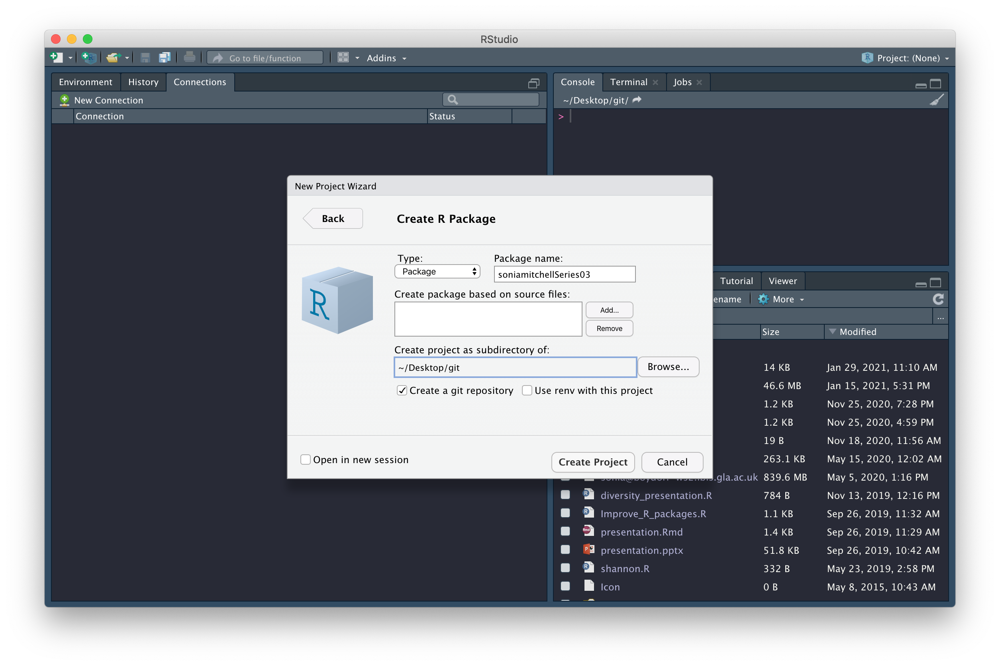
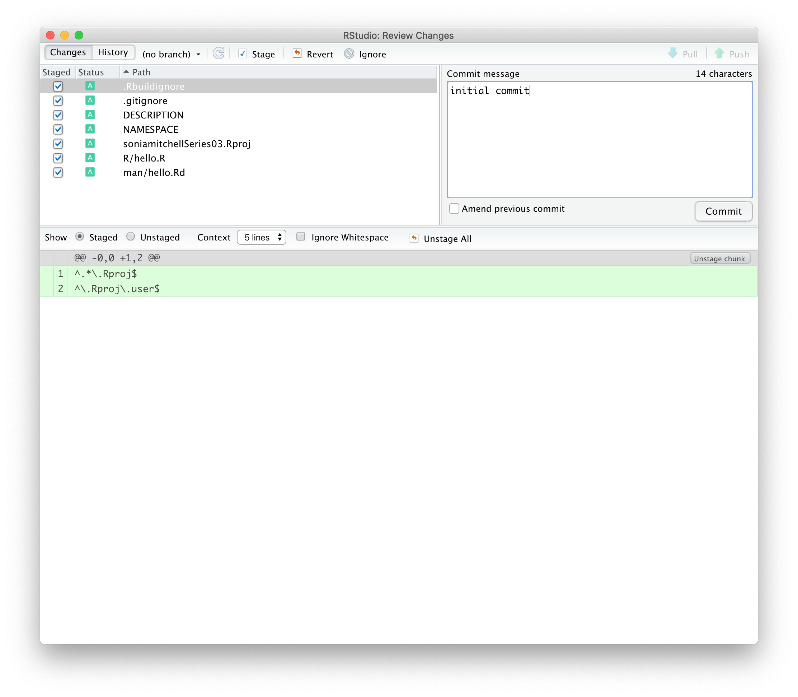
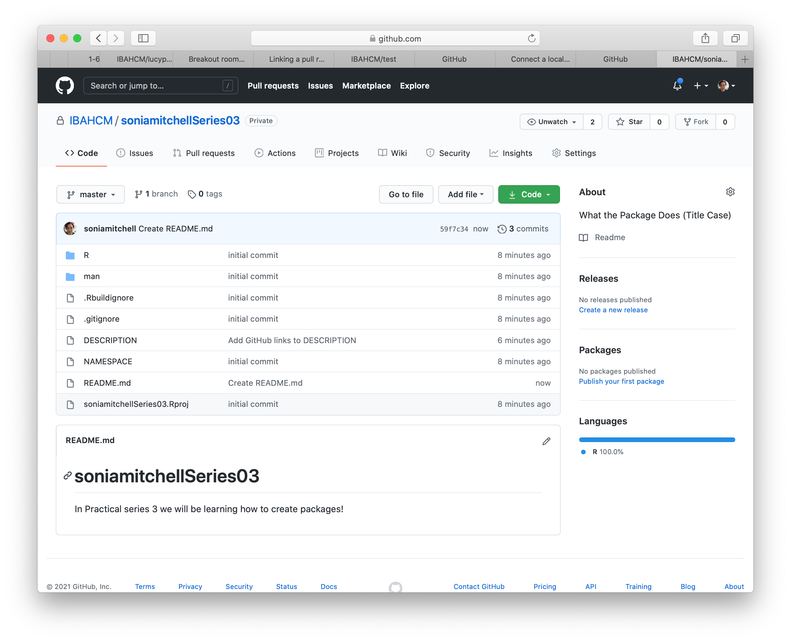
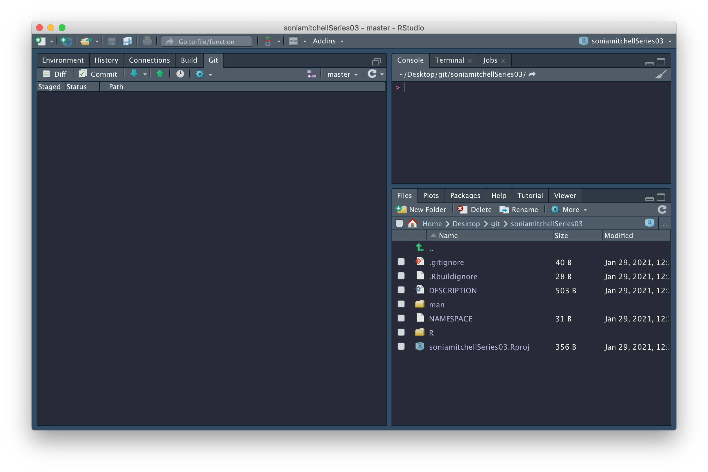
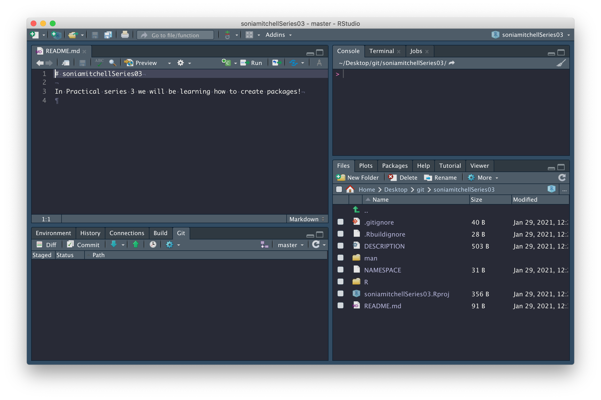

Practical 3-1: Writing an R package
Overview
In this practical we will learn how to create an R package. There is much more information on R packages in this book.
Create a package
We’re now going to create an R package, in RStudio. To do this, click File > New project… > New Directory > R Package. Name the package githubusernameSeries03 (replacing githubusername with your actual GitHub username), check the box next to Create a git repository (and next to Open in new session if you are running this practical in RStudio and don’t want it to close), then click on Create Project.

You should find that (1) a new RStudio project has been created called githubusernameSeries03, (2) your working directory is now githubusernameSeries03, and (3) inside this directory are a number of files and directories:

We’ll explore some of these files in due course. In the mean time, commit all of the files with a nice descriptive comment.

We’ve changed 7 files and made 68 insertions.

But we can’t push! Oh no! The little green Push button is dull and lifeless.

First close that hello.R tab. We don’t need it, but it was automatically generated by usethis::create_package() (which was called by RStudio when you selected File > New project… > New Directory > R Package).
Now, we need to set up a GitHub repository and while there are a number of ways to do this, the easiest way to connect an existing project to GitHub is by running this:
usethis::use_github(organisation = "IBAHCM", private = TRUE)This process will automatically edit your DESCRIPTION file and ask whether it’s OK to commit these changes, so just say yes, and your GitHub repository should open automatically in a window in your browser.
We don’t have a README yet, so click Add a README and type something nice in your README file (in your browser), then scroll down and Commit new file. Your GitHub repository should now look something like this:

and RStudio should look like this:

Note the little green Push arrow is now vibrant and clickable because we’re connected to GitHub. Which reminds me, there’s still one more thing to do. We need to figure out how to pull that README.md file from GitHub to our computer. We can do this by clicking on the blue Pull arrow. When you do this, you should see that the README.md file has appeared in your working directory, with contents matching what you wrote on GitHub.

Now we’re going to do a few things to customise your package. To fast forward through these steps run RPiR::populate_package(). There are some deletions (of example code, for instance) as well as additions (of code from the first practical series). Now push all of the changes to GitHub.
Package structure
We’re ready now to see what this package does. So first, we need to install it on your machine by running:
devtools::install()Note that the brackets are empty. To understand what’s happening here, run ?install (you may need to library(devtools) first) and look at the arguments list. Under Usage, you can see that every argument has a listed default value:
install(
pkg = ".",
reload = TRUE,
quick = FALSE,
build = !quick,
args = getOption("devtools.install.args"),
quiet = FALSE,
dependencies = NA,
upgrade = "ask",
build_vignettes = FALSE,
keep_source = getOption("keep.source.pkgs"),
force = FALSE,
...
)The default option for the pkg argument is ".", which corresponds to the current working directory. So, you don’t need to specify a file path if you’re in the working directory of your package (which you are).
Also note that
devtools::tells R to look for theinstall()function inside thedevtoolspackage. It is equivalent to callinglibrary(devtools)and then just callinginstall()directly.
At this point your RStudio session should look something like this:

and you should have the following files in your working directory:
- .gitignore: contains regular expressions that should be ignored by Git, more info here
- .Rbuildignore: contains regular expressions that should be ignored by R CMD check / when building the package from source, more info here
- demo/: contains R demo files, more info here (which we’ve populated with d0105_run_birth_death.R, the script from Practical 1-5)
- DESCRIPTION: contains metadata about your package, more info here
- man/: contains code used to generate documentation when the package is built (don’t edit these files, this process will be automated), more info here
- NAMESPACE: contains the names of imported and exported functions (don’t edit this file either), more info here
- R/: contains code used to generate functions when the package is built (which we’ve populated with step_deterministic_birth_death.R, the step function from Practical 1-5), more info here
- README.md: contains markdown used to generate your GitHub repository readme page, more info here
- githubusernameSeries03.Rproj: an RStudio project file, which is used to make this directory an RStudio project, and can be used as a shortcut for opening this project from your filesystem, more info here
Feel free to explore these files and make sure you have a good grasp of what they do.
Package metadata and dependencies
Open the DESCRIPTION file. It should look something like this:
Package: soniamitchellSeries03
Type: Package
Title: What the Package Does (Title Case)
Version: 0.1.0
Author: Who wrote it
Maintainer: The package maintainer <yourself@somewhere.net>
Description: More about what it does (maybe more than one line)
Use four spaces when indenting paragraphs within the Description.
License: What license is it under?
Encoding: UTF-8
LazyData: true
URL: https://github.com/IBAHCM/soniamitchellSeries03
BugReports: https://github.com/IBAHCM/soniamitchellSeries03/issues
Imports:
RPiR (>= 0.56.0),
Remotes:
IBAHCM/RPiR
RoxygenNote: 7.1.1This file is used to record package dependencies (that is, other packages that your package needs to work). Most typically, package y will be a dependency of package x if the functions in package y are being used by the functions in package x. In which case you would need to make it explicit within the functions of package x where the dependencies are (we’re not doing this just yet so don’t worry). See here for details.
However, we do use the RPiR package in our demo, so we’ve added a dependency on RPiR for you. This was done by:
Adding an entry in the
Importsfield of the DESCRIPTION file, i.e.Imports: RPiRIn this particular case, the
RPiRpackage is not available on CRAN, so we’ve had to note its location in theRemotesfield as well as theImportsfield:Remotes: IBAHCM/RPiRWe then added an
@importtag in the githubusernameSeries03-package.R file (located in the R directory):#' @import RPiRFinally, we used
devtools::document()to populate the NAMESPACE file (which you should never edit by hand).
As well as recording dependencies, the DESCRIPTION file contains various metadata such as the package Title, Author, and Description. Fill those in now. They will not have been filled in by RPiR::populate_package().
Note that, whenever you make a change to your package, you should try to get into the habit of changing the version number. This is important because it allows you to keep track of which version of the code is being used for a particular analysis. The format is usually major.minor.patch, more info here. After making edits to the DESCRIPTION file, change the Version number to 0.1.1.
Then run devtools::install() to permanently install these changes as part of your package. At any point you feel appropriate, for instance now(!), you may wish to commit the changes you have made. We won’t always tell you when you should commit changes (nor when you should push then to GitHub) - you should think about this for yourself whenever you have made a change to the code.
Package documentation
Look at the package documentation by using the help() function:
help(package = githubusernameSeries03)or ?:
library(githubusernameSeries03)
?githubusernameSeries03This documentation was generated from R/githubusernameSeries03-package.R, which we’ve written for you using roxygen comments (more information can be found here). Open this file and compare its contents with the documentation generated in RStudio. Also note that if you scroll to the bottom of the help function and click on Index you’ll get a list of functions exported by this package, which is useful if you’re searching for specific functionality.
Go ahead and edit the @author field in R/githubusernameSeries03-package.R. Note that these changes are not yet visible in the package documentation (in the the Author(s) section of the package help file). You need to run devtools::document() to recompile the documentation and devtools::install() to permanently install it as part of your package.
Demo
Use the Files tab to navigate to the demo directory. This is where the demos live. Open the 00Index and d0105_run_birth_death.R files as new tabs. You can see that d0105_run_birth_death.R is a standard R script, similar to those you produced in practical series 2.
The important thing to note here is that you no longer need to
source()files, since any functions you need to use can be installed as part of the package.
Try running the demo:
demo(topic = "d0105_run_birth_death", package = "githubusernameSeries03")To list all of the demos installed as part of the githubusernameSeries03 package, run:
demo(package = "githubusernameSeries03")The descriptions in this listing are generated from the demo/00Index file, which lists each demo alongside a description, on a single line. When adding a new entry, remember to put three spaces between the demo name and its description or you won’t see it in the demo list. Note that any script in the demo directory can be run using demo(), after the package is installed. So don’t forget when you add your own demos, you need to run devtools::install() to permanently install them as part of your package.
Function documentation
The functions themselves are stored in the R directory. Navigate back to the root of your package, then into the R directory, and open the step_deterministic_birth_death.R file in a new tab. The function itself should be recognizable, but the documentation is written using roxygen comments and tags. More info here.
Recall that your package documentation was written in a similar format in R/githubusernameSeries03-package.R.
The R directory should only contain function and your packagename-package.R file. If you put any scripts or other random files in here, your package will break.
#' step_deterministic_birth_death
#'
#' Run one step of a simple deterministic exponential birth-death model
#'
#' @param latest a data.frame containing the latest population count
#' (column is 'count')
#' @param birth.rate the birth rate
#' @param death.rate the death rate
#'
#' @return Returns a data.frame containing the updated population
#' @export
#'
step_deterministic_birth_death <- function(latest, birth.rate, death.rate) {
# Calculate population changes
new.births <- birth.rate * latest$count
new.deaths <- death.rate * latest$count
next.count <- latest$count + new.births - new.deaths
# Return data frame containing next population count
data.frame(count = next.count)
}Run ?step_deterministic_birth_death and compare it to the roxygen comments you see in step_deterministic_birth_death.R. The first line of comments is the name of your function and will generate the Title when you run ?step_deterministic_birth_death. Note that there’s a @title tag here that you don’t need to include since roxygen2 expects the first line of roxygen comments to be a title. The next bit (separated by a blank line) is the Description. Again, there’s a @description tag here, which you don’t need to include since roxygen2 expects the description to come after the title. To add descriptors for your arguments, you need to use the @param tag, which uses the format @param argument description. The @return tag is used to populate the Value section of the documentation, and describes the output of your function. The @export tag tells R that you want this function to be exported by your package. That means, you want people to be able to call it, as opposed to it being an internal function that they never see. Finally, I like to add an empty roxygen comment between some of the tags and between the documentation and the function itself because I think it makes it easier to read, but it’s not necessary.
When you add your own function to a package after having written the roxygen comments, or when you edit any roxygen comments you should run devtools::document() to (re)generate the documentation files. These files will automatically appear in your man/ directory (which will also be generated if it doesn’t already exist). In addition to this, the NAMESPACE file will automatically be edited when you add a new exportable function.
Remember that functions that are not listed in the NAMESPACE won’t be exported by your package. So as well as adding an
@exporttag to your function documentation, you should always rundevtools::document()to populate the NAMESPACE
You should then run devtools::install() to permanently install these changes as part of your package.
Prepare for Practical 3-2
Now that you have some familiarity with the package structure, it’s time to start adding your own files. During the course of this practical series, you’ll be adding new functions and new demos to this package. What we’re going to do now is add the files you need to start Practical 3-2.
1. Add a function
For Practical 3-2 you’ll need to add a function called timestep_stochastic_birth_death with appropriate documentation. Copy the step_deterministic_birth_death function for the time being, renamed of course. You’ll be using this as a starting point in Practical 3-2.
2. Add a demo
Now create a new R script called d0302_stochastic_birth_death.R and save it in the demo directory. Copy the contents of d0105_run_birth_death.R into your new demo. You’ll be using this as a starting point in Practical 3-2.
On line 30, edit the function call so that you’re calling timestep_stochastic_birth_death rather than step_deterministic_birth_death(), and don’t forget to edit the title in the documentation.
To add a description of your demo, you need to add a new entry, on a new line in the 00Index file.
3. Rebuild your package
Now that you’ve created a new demo and function, you need to run devtools::document() to recompile the documentation.
Then you need to run devtools::install() to permanently install these changes as part of your package.
Check it works
1. Check it works for yourself
To check it works:
- Run
demo(package = "githubusernameSeries03")to check your new demo is listed; - Try running your demo with
demo("d0302_stochastic_birth_death", package = "githubusernameSeries03"); - Run
?timestep_stochastic_birth_deathto check your new function has documentation; and - Compile an html report from the demo to make sure that the report works too.
Hopefully you’ve been making regular pushes to GitHub.
Now just like you did in Practical series 2, add an issue to your repository and ask the people in your subgroup to check your work.
2. Check it works for other people
There are two ways you can check a package:
First, just install it! They should just call
install_github()as you would forRPiR, and find out what demos are available and run them:# Install your colleague's package devtools::install_github("IBAHCM/githubusernameSeries03") # Find out what demos are available: demo(package = "githubusernameSeries03") # Run the demos, e.g.: demo("d0302_stochastic_birth_death", package = "githubusernameSeries03")If you have time, then create a new project from their GitHub repository (we talked about this in the Sharing is caring section of Practical 2-1), and make sure that the html reports can be generated when you open the demo files and compile them directly.